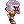
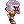

Knowing Shadow Chasers By vTours
Overview

Hey everyone! My nickname is Chato ingame, and i'm a proud Shadow Chaser player from the Guild Casa do Pao de Queijo! I've been playing stalker for a good time, and now it's time for its 3rd class, Shadow Chasers.
On this guide, i hope to cover the basics of the class, show at least two famous builds and share some tips I or others have been using on this great class. Hope you will like it :D !
Almost every RPG has a rogue class, the one that is smart, fast, and somewhat tricky. This is Shadow Chasers in a nutshell. If you think about the word versatility, you'd end up thinking about this class, and that's because it has a lot of potential and incites creativity. If you don't know much about the class, you could summarize Shadow Chasers into a Trickster, making everyone's life harder on PvP/WoE environments, and being extremely versatile on PvM and PvP/WoE as well, since you can copy at least 2 different skills from other classes. Being the "copy cat" it is, SCs don't perform as well as the original class it's copying the ability from, making this class more focused on PvP/WoE than PvM, but it still can put up a fight against monsters as well.
Now that we know at least some of the class, let's talk about Stats:
Stats
Here we'll discuss a little bit about what every status is used for on different Shadow Chasers builds.
- STR - Strength is a really useful Status, it gives you more weight capacity, makes you tougher to some negative effects and gives you attack.
Auto Shadow Spell Builds: On this kind of build, you won't use strength much, being that your damage will come from MATK, so you'll only need it for weight capacity and resistances;
PvP/WoE Builds: On player versus players scenarios, STR is a great status that everyone should have. Having a decent amount of str will give you weight capacity to carry your pots, equipment and etc, also making your difference between max weight and current weight bigger, lowering the chances you'll get masked by another SC;
Bow Builds: When using a bow, your damage will be heavily dependent on DEX, so having a little STR for the same reasons above is still important.
- AGI - Agility is an extremely important status for Shadow Chasers. Besides giving flee and ASPD, it also gives resistance to being masked, making it a essential status for almost every build.
Auto Shadow Spell Builds: The second most important status on this build. You'll need high ASPD to proc you automatic skills more, hence the need for high AGI;
PvP/WoE Builds: As said above, you'll need agi to do not get masked by others Chasers often, and also, the higher your ASPD is, the faster is you masking animation, making it more spammable with bragi and Instant Cast;
Bow Builds: Not so important here, since you'll be most likely using Triangle Shot or aimed bolt, but still great to have in medium amount.
- VIT - Vitality is really important on every build and every class. It gives you HP and Stun immunity when it's at least 100 base.
Auto Shadow Spell Builds: You'll have vitality here just to be increase your survival capability;
PvP/WoE Builds: As your role on WoE or PvP is mostly being a tank debuffing class, you will need a lot of HP to survive and make everyone's life worse. It's essential to have at least 100 vitality on this kind of build;
Bow Builds: Same logic as ASS builds;
- INT - Intelligence gives you more SP, MATK, MDEF, SP recovery, cast reduction and resistance to Blind, Sleep and Chaos, besides being the most important status on Auto Shadow Spell builds.
Auto Shadow Spell Builds: On ASS builds, you'll need a fair amount of MATK to deal damage with your skills that you copied, so the greater the amount of intelligence, the better;
PvP/WoE Builds: Even if it doesn't look like, int is extremely important for this kind of build, because your aim is to get Instant Cast or at least very close to it, and int is going to help you with that;
Bow Builds: You will need at least some SP for PvM, and if you're using aimed bolt, int helps you get closer to IC.
- DEX - Dex was a great status for Stalkers, and still is for Chasers. The greater the dex, the higher is your chance to land a mask on someone, besides that, Dex is the main status to get if you're looking for reaching Instant Cast.
Auto Shadow Spell Builds: On this build, you need to hit the monsters in order to proc you automatic skills, so having Dex is necessary to increase you HIT status;
PvP/WoE Builds: As said before, you'll need A LOT of this. A Chaser with a good amount of dex have a much easier life landing masks, full striping someone and using casting skills;
Bow Builds: The main status of this build, since it's what influences in your damage.
- LUK - Luck is a secondary status for Chasers. It will help you get some perfect dodge, resistance to negative status effects and increasing a bit your ATK and MATK.
Auto Shadow Spell Builds: Good to have in a moderate amount, increasing you MATK;
PvP/WoE Builds: Not bad if you're looking for resisting some negative status;
Bow Builds: Honestly sub-par, try to have at least a little bit to give you some ATK.
Skills
Here, we'll cover only what most important skills do.
Tips on how to use them and gameplay will be discussed later in this guide.
First Job Skills
| Skill | Notes |
|---|---|
 Hiding Hiding
|
Really useful skill. You can use it to dodge other players skills and hide from monsters. |
 Improved Dodge Improved Dodge
|
Always nice to have a little bit of dodge, it can save your life. |
 Backslide Backslide
|
Really great skill for its mobility. You can use it to mob monsters for your party, escape players or skills on pvp or get to them using /bangbang or /bingbing to re position yourself. |
Second/Trans Job Skills
| Skill | Notes |
|---|---|
 Intimidate Intimidate
|
One of the identities of this class. Intimidate is the skill that allows you to copy the latest skill that hit you. What skill to copy varies on your build. Normally, you can copy almost all pre-3rd skills that hit you with a few exceptions. |
 Stalk Stalk
|
Enables movement while hiding, useful skill that will be replaced by others. |
 Vulture's Eye Vulture's Eye
|
If you're using a bow build, it's a essential passive to have, giving you more range. |
 Sword Mastery Sword Mastery
|
Good to have if you're going with a Psychical damage build. |
 Full Divestment Full Divestment
|
Great Skill to have on PvP environment, must have for this situation. Not so useful for pure WoE builds since you won't have a lot of time to divest people and most will be using Full Chemical Protection. |
| Chase Walk | Really great skill, enables movement while hiding and makes you undetectable by detectable skills. Any AoE will reveal you however. |
Third Job Skills
| Skill | Notes |
|---|---|
 Bloody Lust Bloody Lust
|
Creates a 7x7 red circle on the ground that makes every character that steps on it enter the frenzy status. In other words, use it to drain everyone's SP.
A great situational skill with a noticeable CD that can be game changing depending on how you use it. Great to break precasts or drain SP from someone that is trapped. |
 Body Painting Body Painting
|
Reveals everyone that is hiding within a 5x5 are from you. Great skill against Hiding classes or people who use Smokie Card. |
 Chaos Painting Chaos Painting
|
Inflict Chaos on a 5x5 area. Great for WoE and BG. Try to put it in small areas or entrances/exits to get people off guard. |
 Escape Escape
|
Great mobility skill! When used, makes your character back a number of cells and leaves a trap on where you were.
You can use combos to trap people or monsters. A must have skill. |
 Feint Bomb Feint Bomb
|
One of the best skills to survive on WoE and PvP. Makes your character backs a number of cells like Escape but you'll be in hiding status AND able to use skills while in it.
Really great skill to have, making you able to jump on a whole precast and survive if played right. You can use your masks or any other skill, so make use of that feature. |
 Invisibility Invisibility
|
A tricky skill to use. What this skill does is that you enter in a complete hiding status, and can't be revealed, but will take damage from AoE attacks. While in this status, your SP will be drained constantly and you attacks will have ghost property.
Some Chasers use it to break emps with bows. |
 Maelstrom Maelstrom
|
Works like a mini Land Protector, absorbing ground skills. It's important to notice that you or others stalkers can't use faint bomb while stepping on this skill, so be careful on how to use it. |
 Manhole Manhole
|
Creates a hole on the ground that will trap any character that walks on it. While trapped the character can't get attacked, but you can use shadow form on him and try to be tricky.
Same logic as chaos painting, try to predict where anyone would go and put your manhole there. |
 Masquerade-Gloomy Masquerade-Gloomy
|
One of the most used masks. Knwon for removing target's mount or homunculus. Use it on Dragon Breath RKs and watch they use butterfly wing on WoE :D. |
| Masquerade-Ignorance | Makes your target unable to use skills for a certain time and drains some of their SP. The description should be enough to give you the idea of how good is this skill.
This is the mask that every Chaser should use first, unless the target is an DB Rk. |
 Masquerade-Weakness Masquerade-Weakness
|
The third of the most used masks. Masq. Weakness removes your target Shield and Weapon, making it a defenseless easy target to your team.
It's important to notice that even if your target is using Full Chemical Protection, if you land your mask, he'll have his weapon and shield taken. |
 Reproduce Reproduce
|
The intimidate Skill from 3rd Job. This awesome skill makes you able to copy 3rd class skills that hits you.
The skills copied varies from build to build. |
| Shadow Form | Makes your target take the damage you'd receive. Useful to get combo suras offguard, tanking asuras or any incoming damage.
The amount of people that die to Shadow Form is impressive. You should train the use of this skill. |
 (Auto)Shadow Spell (Auto)Shadow Spell
|
When attacking with a sword or dagger, the skills that you learned through Intimidate or Reproduce can be cast automatically. A whole build is based on this skill.
There are some things you need to know about it: You can't cast holy spells except heal and spells that are both magic and physical. If the skill you copied need items to be used, you'd still need them when using ASS. The higher lvl ASS is, the probability of the automatic cast is lower, but the copied skill level is higher, so you'll have to find a balance between probability and damage when deciding what lvl of ASS you're going to be using. |
 Triangle Shot Triangle Shot
|
One source of DPS for Bow builds. Shots 3 arrows on a target. |
Equipment
Here's the part where we discuss about what equipment you should/could get. There will be 3 builds that we're going to take a look at: WoE/PvP support build, ASS and Bow Chaser.
I'll be focusing more on WoE build, being the one that i have experience the most, but we'll get through other builds ideas.
WoE/PvP

In this section we talk about the most famous Sc build. Even though this class is really capable of putting up a fight on PvM, is at PvP where it shines.
Keep in mind that the goal with this build is to distribute the most CC and debuff as possible, so our goal is to be really tanky, and survive enough to break a defense or be useful for your team.
This is the build i have the most experience with of all the 3, and right now we're gonna go trough all its necessary equipment, from basic to luxury:
Headgears:
Getting your hat is probably the easiest part of this build. There isn't much left besides  Feather Beret. It gives you 10% reduced damage from humans and +1 MDEF that comes in handy.
Feather Beret. It gives you 10% reduced damage from humans and +1 MDEF that comes in handy.
You can get Feather Beret by giving Sakjul (Rachel 152, 131) a  Beret, 100
Beret, 100  Soft Feather and 1
Soft Feather and 1  White Dyestuffs. Obs: There's a 10% chance to fail this quest. You'll lose all items if that happens D: .
White Dyestuffs. Obs: There's a 10% chance to fail this quest. You'll lose all items if that happens D: .
As for middle and Lower, we're gonna be using  Blush of Groom and
Blush of Groom and  Gentleman's Pipe, both giving you 5% defense from humanoid.
Gentleman's Pipe, both giving you 5% defense from humanoid.
I do use  Well-Chewed Pencil Shield just for achieving the exact number to hit IC when buffed.
Well-Chewed Pencil Shield just for achieving the exact number to hit IC when buffed.
Blush of Groom, Gentleman's Pipe and Well-Chewed Pencil Shield can be obtained via Cash Shop.
Weapons
The best weapon you can get right now is  Combat Knife (drops from LHZ boss Sniper Cecil) for defensive purposes. It gives you 10% defense from Demihuman and can get enchanted in Malangdo.
Combat Knife (drops from LHZ boss Sniper Cecil) for defensive purposes. It gives you 10% defense from Demihuman and can get enchanted in Malangdo.
When enchanting it, you should aim for double Dex, to boost your chances to land a debuff and get closer to IC.
If you can't afford a CK right now, you could get your hands on a  Fortune Sword (you can get it from Phreeoni) and enchant it on Malangdo as well.
Fortune Sword (you can get it from Phreeoni) and enchant it on Malangdo as well.
Shields
About shields, there's a choice to make: Immune Shield or Valk?
I personally choose  Valkyrja's Shield [1] for its elemental defense and MDEF, but
Valkyrja's Shield [1] for its elemental defense and MDEF, but  Immune Shield [1] is a nice option as well if it's +7 or more and great at +9.
Immune Shield [1] is a nice option as well if it's +7 or more and great at +9.
Both items are easy to obtain, Valk Shield is really cheap (~5m) and Immune Shield can be obtained via Proof of Loyalty, Monster Hunt cupons and Valor Badges (Battleground currency).
With those items, you should use the classic  Thara Frog Card for its Humanoid defense.
Thara Frog Card for its Humanoid defense.
Armor, Garment and Shoes
With the presence of WoE Set ingame, there's not much that you can do about it, this is the best defense you could get by using its set and set effect. Also, the set effect gives you DEX, and that's the Stat that is always good to have as a Chaser.
Right,  WoE Suits [1] doesn't need to be +9 right away, it also gives you a bonus when +6. This is probably the most expensive item from the basic build when +9, but it's definitely worht it!
WoE Suits [1] doesn't need to be +9 right away, it also gives you a bonus when +6. This is probably the most expensive item from the basic build when +9, but it's definitely worht it!
Continuing with the woe set, we get  WoE Boots [1] and
WoE Boots [1] and  WoE Manteau [1]. Those are great items, all of them give nice resistances and have slots, making you really tank. I wouldn't recommend going WoE with a tank mindset if you're not using WoE set.
WoE Manteau [1]. Those are great items, all of them give nice resistances and have slots, making you really tank. I wouldn't recommend going WoE with a tank mindset if you're not using WoE set.
As for cards, you should get  Marc Card on armor, giving you protection against freeze status and resistance to water which is great.
Marc Card on armor, giving you protection against freeze status and resistance to water which is great.
There are other options as well: If your build consists of having 100 MDEF or you think you just don't need freeze immunity, you can always use  Pecopeco Card for its +10% max HP.
Pecopeco Card for its +10% max HP.
For those with funds,  Ghostring Card for defense against Asuras, Hell's Plants and such or
Ghostring Card for defense against Asuras, Hell's Plants and such or  Angeling Card because it gives you Holy 1 property, reducing almost all elemental damage by 25%.
Angeling Card because it gives you Holy 1 property, reducing almost all elemental damage by 25%.
For Garment you can get a few options to put in your WoE Manteau [1] :  Raydric Card for its neutral defense, good against Asura or any other hight neutral damage,
Raydric Card for its neutral defense, good against Asura or any other hight neutral damage,  Noxious Card for an all around good defense (my personal choice) and if you do have money on your pocket, a
Noxious Card for an all around good defense (my personal choice) and if you do have money on your pocket, a  Deviling Card instead of a Raydric to be really tanky against neutral.
Deviling Card instead of a Raydric to be really tanky against neutral.
Talking about WoE Boots [1], a great card is  Green Ferus Card. It's simple and direct: VIT+1 and 10% HP.
Green Ferus Card. It's simple and direct: VIT+1 and 10% HP.
Accessories
About accessories we do have a few choices:
The ones that will give you the most elemental defense are  Glorious Rings. They're great and my favorites. With them, tanking Tetra Vortex, Dragon Breath or any other common elemental damage skill that wee see at woe is much easier. You can get those by playing Battlegrounds and farming Valor Badges, costing 1200 each.
Glorious Rings. They're great and my favorites. With them, tanking Tetra Vortex, Dragon Breath or any other common elemental damage skill that wee see at woe is much easier. You can get those by playing Battlegrounds and farming Valor Badges, costing 1200 each.
Other option of Accessories that are easy to get is  Black Rosary [1], an basic but good accessory that will give you some MDEF and you could equip
Black Rosary [1], an basic but good accessory that will give you some MDEF and you could equip  Alligator Card on.
Alligator Card on.
Another good accessories that aren't that easy to put your hands on are  Hero Rings, which look bad when taking a lookt at them first but become very interesting when we talk about the type of enchantments it can get.
Hero Rings, which look bad when taking a lookt at them first but become very interesting when we talk about the type of enchantments it can get.
You can get your Hero Rings by doing Bios Island, Morse Cave and Temple of Demon God instances and obtaining Token of Hero. For futher explanation, check NovaWiki's guides about them.
With these bad boys you can get up to +5 on any status (Being the better ones VIT or DEX), +5% ATK or MATK (that doesn't matter too much), +5% MAX HP and +15 DEF or +5 MDEF.
Auto Shadow Spell Build

This is more of a For fun PvM build for Chasers that is really cool. It consists on the use of ASS and other items that generate automatic skill proc, infesting your screen with multiple skills.
The Goal with this build is to achieve 193 ASPD or somewhere closer to that, increasing the chance of the skill proc, and have a lot of MATK to increase the damage of your auto skills.
I do not recommend this build if you just entered the game/server. It's for fun and you'll need some equipment to achieve its general goal.
Headgear
For starters, one of the best pure MATK hats we get is  Vibrant Rose [1], that can be upgrade to
Vibrant Rose [1], that can be upgrade to  Celine's Ribbon [1] (Good luck with that).
You have to gather 500
Celine's Ribbon [1] (Good luck with that).
You have to gather 500  Bloody Coins in order to get that hat, and to upgrade it to Celine spend 1000 more and have a +9 Vibrant Rose ready.
Bloody Coins in order to get that hat, and to upgrade it to Celine spend 1000 more and have a +9 Vibrant Rose ready.
For more info about that check NovaWiki's Horror Toy Factory Guide.
Another option that was made exclusively for this build is  Inconspicuous Hat [1] which is already great at +7 and awesome at +9. You can get this one for 5,000 cash points.
Inconspicuous Hat [1] which is already great at +7 and awesome at +9. You can get this one for 5,000 cash points.
I believe those 3 are the better ones for this build, but you could still use  Skull Cap [1] if you already have one with good refine.
Skull Cap [1] if you already have one with good refine.
For middle headgear, you'll find two simple options as  Black Frame Glasses [1] (The original one from Cash Shop doesn't have a slot, so you'd need to buy a Spiritual Auger and slot it) being the expensive option or
Black Frame Glasses [1] (The original one from Cash Shop doesn't have a slot, so you'd need to buy a Spiritual Auger and slot it) being the expensive option or  Angel Spirit as a more affordable one.
Angel Spirit as a more affordable one.
Talking about lower headgear, the one that has the best synergy with this build is by far  CD in Mouth. It'll randomly proc elemental bolts when you're attacking psychically. You can get this item from Cash Shop as well.
CD in Mouth. It'll randomly proc elemental bolts when you're attacking psychically. You can get this item from Cash Shop as well.
For cards i'd recommend  Isila Card and/or
Isila Card and/or  Kathryne Keyron Card if you have a well refined Hat.
Kathryne Keyron Card if you have a well refined Hat.
Weapons
Briefly talking about Weapons, we can point two that excel on this build:
The first one and my pick is  Elemental Sword [3]. This sword works in a approximate way of CD in Mouth, being that it will proc bolts starting with cold bolt always.
Elemental Sword [3]. This sword works in a approximate way of CD in Mouth, being that it will proc bolts starting with cold bolt always.
Besides having 3 slots, which is already great, this weapon has a lot of synergy with the build and with a good refine can achieve a lot. You'll find this sword on market for low prices.
If you don't want to invest on a Elemental Sword, your other option is getting a  Faceworm Queen Leg [2], a dagger that drops from the Faceworm's Nest instance and you can also buy it for a relative low price on market.
Faceworm Queen Leg [2], a dagger that drops from the Faceworm's Nest instance and you can also buy it for a relative low price on market.
For cards, you can use A LOT of them, and it depends on the skills that you're using with auto shadow spell.
For example, there's  Red Ferus Card if you're using Meteor Storm,
Red Ferus Card if you're using Meteor Storm,  Sidewinder Card if you're using elemental Sword,
Sidewinder Card if you're using elemental Sword,  Mutant Dragonoid Card,
Mutant Dragonoid Card,  Bloody Knight Card,
Bloody Knight Card,  Atroce Card (if you're lucky or have money to spend) and
Atroce Card (if you're lucky or have money to spend) and  Stormy Knight Card (same situation as Atroce card).
Stormy Knight Card (same situation as Atroce card).
Shields
My pick for shields is  Thorny Buckler [1] that you can combo with
Thorny Buckler [1] that you can combo with  Bison Horn [1] and get a little bit of ASPD, a essential status for this build.
Bison Horn [1] and get a little bit of ASPD, a essential status for this build.
If you're not comfortable with this shield, there's always the good and old Valkyrja's Shield [1].
With that, i'd recommend a simple  Hodremlin Card.
Hodremlin Card.
Armor, Garment and Shoes
For armor, you'll have some variety of options. The truth is that there's no excellent armor for this build, maybe the closest to that is  Hero Hidden Cloth [1] for its great passive.
Hero Hidden Cloth [1] for its great passive.
You can get those "hero armors" by completing Bios Island and Morse Cave, check out this wiki's guides about it.
There's also  Valkyrian Armor [1] that drops from Valkyrie Boss and
Valkyrian Armor [1] that drops from Valkyrie Boss and  Olean's Gown [1] that you can get from Banshee monsters.
Olean's Gown [1] that you can get from Banshee monsters.
The offensive card option for armor is  Byorgue Card.
Byorgue Card.
About garments, there's two really good options to choose from: One is getting a good (Int or agi)  Giant Faceworm Skin [1] that will give you , if it's +12, ASPD and MATK depending on the enchants, and the other one is the famous
Giant Faceworm Skin [1] that will give you , if it's +12, ASPD and MATK depending on the enchants, and the other one is the famous  Heroic Backpack [1] that if refined to +7 or +9 is really good, besides being easily obtainable. (You'll find them on Battleground Shop, Proof of Loyalty shop and Monster Hunt Shop).
Heroic Backpack [1] that if refined to +7 or +9 is really good, besides being easily obtainable. (You'll find them on Battleground Shop, Proof of Loyalty shop and Monster Hunt Shop).
You can equip  Cenere Card if you need more ASPD or
Cenere Card if you need more ASPD or  Antique Book Card if more damage is needed.
Antique Book Card if more damage is needed.
When talking boots, there's one type of boot that is awesome, and it is the Temporal Boots.
Now, before choosing which you're going to use, you need to calculate how you're gonna get high ASPD. If you have already enough ways to obtain that, go for a  Temporal Int Boots [1], if not, then  Temporal Agi Boots [1] is your answer!
Temporal Int Boots [1], if not, then  Temporal Agi Boots [1] is your answer!
In order to get Temporal Boots, you need to farm at Old Glast Heim in both normal and hard difficulties. Check NovaWiki's guide about this instance.
You can use  Green Ferus Card for some HP, or if you have funds, the best option is
Green Ferus Card for some HP, or if you have funds, the best option is  Outrageous Cookie Card on a well refined pair of boots.
Outrageous Cookie Card on a well refined pair of boots.
Accessories
Let's start with cheap options: you can try to use the  Ring of Flame Lord and
Ring of Flame Lord and  Ring of Resonance combo that drops from Ifrit.
Ring of Resonance combo that drops from Ifrit.
If using Thorny Buckler [1], then Bison Horn [1] is your go to.
Now for more expensive options, we have  Pendant Of Maelstrom [1] and
Pendant Of Maelstrom [1] and  Bakonawa Agimat Tattoo that you can get by doing Nightmarish Jitterbug instance and Baknonawa Festival respectively. Check NovaWiki's guides about them.
Bakonawa Agimat Tattoo that you can get by doing Nightmarish Jitterbug instance and Baknonawa Festival respectively. Check NovaWiki's guides about them.
For cards, a simple option is go to  Scaraba Card or if needed more specific upgrades
Scaraba Card or if needed more specific upgrades  Imp Card and
Imp Card and  Siroma Card.
Siroma Card.
Bow Chasers
Unfortunately, this is a build that i, and many others, don't explore much, but it exists!
So i'll give a brief overview of key equipment, though it won't be as detailed as above.
Basically, what you need to achieve in this build is high amount of DEX and equips that grant Long Ranged Damage and ATAK.
Here are a few examples:
 Ship Captain Hat [1] or
Ship Captain Hat [1] or  Ancient Gold Ornament [1] with a
Ancient Gold Ornament [1] with a  Dark Pinguicula Card
Dark Pinguicula Card

Two great weapons to use are  Orc Archer Bow and a well refined
Orc Archer Bow and a well refined  Crimson Bow [2].
Crimson Bow [2].
Just don't forget to use  Steel Arrow with your Orc Archer Bow!
Steel Arrow with your Orc Archer Bow!
The idea about armors and garment is the same as above on the Auto Shadow Spell Build , just changing the statuses to Dex instead of Int.
A great card for garment is undoubtedly  Menblatt Card.
Menblatt Card.
For boots the idea is the same, only it's a Temporal Dex Boots instead.
And for accessories the goal is to put your hands on a Pendant Of Maelstrom [1] or Bakonawa Agimat Tattoo as well, using two  Gold Scaraba Cards.
Gold Scaraba Cards.
Builds

Here will be shown just general aspects of the status build. Each should decide precisely what exact status to put in their build.
It will be listed the most important skills to use on each build as well. Gameplay will be discussed in the next section.
WoE/PvP
Stats
- STR 40+
- AGI 70+
- VIT 100+
- INT 90+
- DEX 120
- LUK 30+
Skills
You will be using a lot of skills on this build. Everything that makes your enemy's life harder is useful.
Key skills are: The three masks: Ignorance, Weakness and Gloomy.
Manhole, Chaos Panic, Bloody Lust and Maelstrom.
As for copied skills, you have a few options: Flying kick is almost mandatory, it gives you a unreal mobility and chase potential, as for the others, there's Windmill from Sura, Diamond Dust from Sorcerer, Crazy Weed from Creators and Jackfrost from Warlocks. All of them are useful skills to land a CC or support your team.
Auto Shadow Spell
Stats
- STR ~10
- AGI 120
- VIT 60+
- INT ~100
- DEX 70+
- LUK 50+
Skills
On this build, you can copy Meteor Strom from Wizards, Dupe Lights from Arch Bishops, Storm Gust from Wizards as well as Cold Bolt from Magicians.
Bow Chasers
Stats
- STR ~30
- AGI 100+
- VIT 60+
- INT 50+
- DEX 120
- LUK 50+
Skills
Good skills to use are Triangle Shot, Aimed Bolt from Ranger as well as Arrow Storm from them. If you're doing an aspd build, Raging Trifecta Blow from Monks is a good option as well as Dupe Light from Arch Bishops.
Gameplay
Here in this section, i'll be featuring quick tips and tricks about the class on WoE/PvP scenarios, since it's the build i'm most comfortable at. Given that, we'll be using the WoE/PvP build.
But before that, i'll reiterate what was said before about your role as a WoE/PvP Chaser:
It's important to accept that Shadow Chasers are a Supportive class, but as i like to call, offensive support. Your job is to protect your team or invade the enemy lines, and for that, you should be quick using masks and your two best friends: Escape and Feint Bomb.
On WoE, you have to act accordingly to your guild strategy, being protecting your friends from other stalkers (you can always use Maelstrom to disable the use of the enemy's Feint Bomb) or attacking the enemy backline, is always important to maintain focus as a Stalker. Know your primary targets and don't stop! You have 3 mobility skills on your disposal, so make it hard to people to target you by never being in the same spot for more than 2 seconds.
If your enemy isn't getting masked, be creative, don't waste your time repeating actions. Try another masks, other CCs you might have or just change targets.
Besides that, be careful with your cooldowns. You have a lot of debuffs, think if it's really necessary using that specific one before burning its CD.
That's just a few thoughts about your behavior as a Stalker, and should we all get lucky at WoE/PvP!!
Where to get Paints?
First of all, to use most of our skill, Stalkers need to use Surface Paint and Face Paint. Here's a quick way of obtaining them:

Flying Kick + Escape trick
This is one of the most used tricks as a Shadow Chaser, allowing you to quickly root your target and be really annoying.
Notice that escape can be a bit buggy sometimes when the target is moving, so that will make it harder to land.
What you actually do is just click Flying kick on your target and quickly press Escape.
Try to use different levels of Escape to go different distances and find one you're comfortable with

Manhole positioning
If you came from other server or is new to using this skill, know that Manhole have a different positioning.
You can't actually put it under people, making it harder to land. You will need to predict your target's path or put it in an area that someone will certainly step on it.
Here's an image showing where you can start putting Manholes.

Little Feint Bomb + Masquerade interaction
As said before, one of the great things about Feint Bomb is that you can use skills while on hiding status, making you untouchable and useful at the same time.
Considering that, if you use your Feint Bomb on lvl 1, you'll have enough range to still be in hiding and cast a Mask on your target, making it a core easy combo.
Leveling
Leveling isn't that great with a stalker. You can try it with ASS and Bow build but it won't be as strong as other more pvm focused classes.
If you can, dual client with a Ranger or ask kindly for one of your friends help.
Recommended Places:
- Lv1 - Lv30
- Payon Dungeon it is. Start by killing Zombies and then when feeling confident go for Poporings and Skeletons. Try to use Holy elemental damage (From Aspersio or Silver Arrow).
- Lv31 - Lv70
- Now it's time to go to Orc's Dungeon.
This is a great map for mobbing, almost all monsters are aggressive and there are a lot of them on the map. Try to use Holy elemental damage (From Aspersio or Silver Arrow).
- Lv70 - Lv85
- You can go to Magmarings map (Warper > Dungeon > Thor Volcano > Enter the exit portal) with a Archer dual/friend using Water element. The exp here is great.
- If you don't want to go to Magmarings, you can get your eden quests to Kill Evil Druids and Wraiths. They are repetitive, so do it until you're 85.
- Lv85 - Lv175
- From now on things get really stabilized. The best exp outcome from 85 to max level is doing Gramps (Turn ins) that are Eden Group quests that consist of killing 400 monsters on a special map. You'll be given 2 types of monsters to kill and can enter with a party on this map. Being extremely recommended that you do this quest on a party.
There are 3 ranges of gramps: 85-114, 115-144 and 145-175.
Don't forget to always check Eden Quest Boards. They'll help you tremendously on leveling and can be done when your gramps is on CD.
Thank you!
That's it for now! I hope that with this guide you guys have a brief idea of how this class works, and accessed some of the initial information one would need to start playing it!
It's been fun writing this. If anything, contact me ingame or Discord (vTours). Cya!!